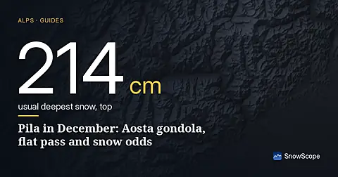

Branäs snow conditions: 27 cm on the hill station, nothing by the river (14 November 2026)
Northern Värmland shows the effect of height better than anywhere this week. On the morning of 13 November the weather station at Kindsjön, 13 km from Branäs at 425 m, measured 27 cm of snow. Letafors, at 338 m, had 17 cm. Östmark, down in the valley at 100 m, had none. Branäs itself runs from 150 m by the Klarälven river to 568 m at the top, so it spans exactly that range.
See the live snow forecast for Branäs in the SnowScope appSnow depth, powder alerts and the 3D map, free.

Top white, bottom green
Kindsjön had 1 cm on 10 November and then 27 cm on the 13th; Letafors went from 11 cm to 17 cm in the last day. Both stations are in the forest on the hills, at a height similar to Branäs's upper half. The village and the bottom lifts sit much lower, closer to Östmark's bare ground.
Our estimate for the last seven days is about 14 cm of new snow at the top and 4 cm at the bottom, the same picture in our own numbers.

Mild days ahead
Our forecast has almost no snow at the base over the next seven days and about 3 cm at the top. The other forecasts agree that it gets milder: about 90 % of the water at the base falls as rain, about half at the top, and the snow line climbs to roughly 590 m, just above the summit. The fresh snow will shrink.
What 46 winters say
On 14 November, our usual depth is 5 cm at the top and 1 cm at the base. Today's top is far above that. By 15 December the usual figures are 26 cm at the top and 10 cm at the base, and about one winter in six has no natural snow at the base even then.
The record also shows fewer snow days at the base, from 132 in the first 15 winters to 95 in the last 15. Like the other low resorts in central Sweden, Branäs relies on snowmaking to open on time.
Opening
Branäs's official opening weekend is 11 to 13 December, and the season ends on 4 April. On 13 November no lifts were running; a short cross-country loop was open.
Tips for skiers
- To see real snow this weekend, drive up to the forest roads around Kindsjön rather than staying by the river.
- Wet, heavy snow on branches after a night like this makes forest roads slow; give yourself time.
- Check Branäs's slope and weather page before you plan a pre-season trip.
More maps (external sites)
References and credits
- SMHI, open data: daily snow depth at Swedish weather stations www.smhi.se/data/meteorologi/ladda-ner-meteorologiska-observationer
- Branäs, official site: opening dates and lift status, read 2026-11-13 www.branas.se/oppettider/
- Branäs, slopes and weather (official) www.branas.se/skidakning-i-branas/backar-och-vader/
About these numbers
Measured snow: morning readings of 13 November 2026 at the official weather stations of Sweden (SMHI open data), Finland (FMI open data, CC BY 4.0) and Norway (MET Norway station reports, CC BY 4.0, as published by Ogimet). Norway's national snow map seNorge (NVE and MET Norway, NLOD) gives the estimates on a 1 km grid for the slopes. Our numbers: SnowScope's forecast for the next seven days at three heights of the ski area, compared with independent forecasts (ECMWF, ICON, GFS, GEM) for 14 to 20 November; snow history of 46 past winters (1980-81 to 2025-26), a model of the past corrected for height. Opening dates: the resorts' own pages, read on 13 November 2026. Run length and lift count: OpenSkiMap mapping.
Official avalanche bulletins: Lavinprognoser (Naturvårdsverket)
Cite this report
For research, teaching or the press: the numbers and charts are free to reuse under CC BY 4.0 with this citation.
SnowScope (2026), Branäs snow conditions: 27 cm on the hill station, nothing by the river (14 November 2026), https://snowscope.app/blog/en/2026/11/branas-snow-conditions-14-november-2026.html, accessed 2026-11-14
SnowScope (Atlas Labs). (2026, November 14). Branäs snow conditions: 27 cm on the hill station, nothing by the river (14 November 2026). SnowScope snow reports. https://snowscope.app/blog/en/2026/11/branas-snow-conditions-14-november-2026.html
BibTeX
@misc{snowscope2026branassnowconditions14no,
author = {{SnowScope (Atlas Labs)}},
title = {Branäs snow conditions: 27 cm on the hill station, nothing by the river (14 November 2026)},
year = {2026},
month = nov,
howpublished = {\url{https://snowscope.app/blog/en/2026/11/branas-snow-conditions-14-november-2026.html}},
note = {Published 2026-11-14 20:11 UTC; accessed 2026-11-14}
}· CC BY 4.0 · Methods, data and tools →
Branäs: snow and temperature by height, this winter vs last (tools) →
Follow Branäs
Free: a message when fresh snow is coming, and the forecast every morning.
More snow reports

Pila above Aosta pairs a flat 60.00 EUR day pass with reliable December snow on its upper slopes.

Orcières Merlette offers a high base at 1826 m and a 6-day pass from 227 EUR, making it a reliable choice for a December ski trip.

Mt. Baker in December: 46 in (116 cm) of snow at mid-mountain on a typical 15 December, and a $98.80 Monday-to-Thursday ticket sold on the day only.